News Archives: Nov 1, 2003 - Jan 6, 2017
47 stories listed.
| 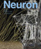 |
Meister Lab: The Eye Has a Short Attention Span
- Nov. 28, 2007
No matter how hard we fix our gaze, our eyes ... Tags: 2007, Markus Meister, Neuron, publication |
| 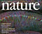 |
Technicolor Brains: Mapping Neural Circuits in "Brainbow" Mice
- Nov. 28, 2007
In a paper published in the November 1 issue of ... Tags: 2007, Jeff Lichtman, Joshua Sanes, Nature, publication |
 |
Summer Research in Bangalore
- Nov. 15, 2007
Through the Harvard-Bangalore Science Initiative, MCB Professor Venkatesh Murthy, along ... Tags: 2007, Harvard-Bangalore Science Initiative, Venkatesh Murthy |
| 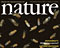 |
Gelbart Lab: Genome Analysis of Twelve Drosophila Species
- Nov. 8, 2007
On Thursday, November 8, there was a birth announcement that ... Tags: 2007, Nature, William Gelbart, publication |
|
Sir John Skehel to Deliver 2007 John T. Edsall Lecture
- Nov. 2, 2007
The annual John T. Edsall Lecture returns on Thursday, November ... Tags: 2007, John T. Edsall Lecture, lecture |
|
|
Christopher Murphy Awarded 2007 Peralta Prize
- Oct. 24, 2007
This year’s Peralta Prize has been awarded to Christopher ... Tags: 2007, Ernest Peralta Fund Award, awards |
|
|
Multisite Phosphorylation and Circadian Oscillations
- Oct. 17, 2007
Michael Rust and Joe Markson, a postdoc and graduate student ... Tags: 2007, Erin O'Shea, Science, publication |
|
|
Recycling Equipment to Help Scientists in Need
- Oct. 4, 2007
In February 2005, a group of Harvard University graduate students ... Tags: 2007 |
|
|
Jim Watson to Offer Public Lecture on Lessons from a Life In Science: Wednesday, October 3
- Sept. 20, 2007
Nobel Laureate and former MCB Professor Jim Watson will be ... Tags: 2007, James Watson, lecture |
|
|
Andrew McMahon Elected to the Royal Society of London
- Sept. 13, 2007
Andrew McMahon, Frank B. Baird, Jr. Professor of Science within ... Tags: 2007, Andrew McMahon , Royal Society of London, awards |
|
|
MicroRNAs and Nodal Signaling
- Aug. 31, 2007
Choi et al. developed a technology to block the interaction ... Tags: 2007, Alexander Schier, Science, publication |
|
| 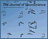 |
Gaining Strength From Inactivity
- Aug. 30, 2007
Perhaps you have had the experience of walking into a ... Tags: 2007, Journal of Neuroscience, Venkatesh Murthy, publication |
|
Female and Male Mice Sexual Behaviors are Just a Sniff Away
- Aug. 29, 2007
In a set of experiments published in the August 5th ... Tags: 2007, Catherine Dulac, Nature, publication |
|
|
Richard Losick "FEEDS" Studies in Science
- Aug. 13, 2007
On Friday, March 16th, thirty Harvard undergraduates participated in Professor ... Tags: MCB Outreach Program, 2007, Catherine Dulac, Richard Losick |
|
| 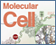 |
Switching on Brain-Specific Alternative Splicing with a microRNA
- Aug. 7, 2007
In an exciting breakthrough the Maniatis lab has now identified ... Tags: 2007, Molecular Cell, Tom Maniatis, publication |
|
Catherine Dulac's Phenomenal Pheromone Fascination
- Aug. 6, 2007
The brain’s cognitive abilities fascinate most people in neuroscience ... Tags: 2007, Catherine Dulac, MCB Chair, profile |
|
 |
Rachelle Gaudet Awarded Klingenstein Fellowship
- July 30, 2007
Rachelle Gaudet has been selected to receive a Klingenstein Fellowship ... Tags: 2007, Klingenstein Fellowship Award, Rachelle Gaudet, awards |
|
State of the Art
- July 30, 2007
The 16th International C. elegans Meeting was held at UCLA ... Tags: 2007, Andrew McMahon , Craig Hunter |
|
| 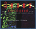 |
Giving Hedgehog the Gas: Identification of Gas1 as a Novel Positive Component of Shh Signaling
- July 20, 2007
In the May 15th issue of Genes & Development, Allen et ... Tags: 2007, Andrew McMahon , Genes and Development , publication |
|
Fine-tuning Heat Sensitivity
- June 26, 2007
Everyone has felt burning pain sensations, whether it was from ... Tags: 2007, Neuron, Rachelle Gaudet, publication |
|
 |
Howard Berg Receives Two Notable Awards
- June 20, 2007
On March 6, Professor Howard Berg was presented with the ... Tags: 2007, Howard Berg, U.S. Genomics Award for Outstanding Investigator, awards, honorary degree |
| 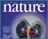 |
Embryonic Stem Cells and Cloned Animals Produced by Chromosome Transfer into Mouse Zygotes
- June 14, 2007
Our lab sought other cell types besides oocytes that might ... Tags: 2007, Kevin Eggan, Nature, publication |
|
Turning Back the Developmental Clock: Directly Reprogrammed Fibroblasts Indistinguishable from Embryonic Stem Cells
- June 11, 2007
Nuclear transfer experiments, such as the cloning of Dolly the ... Tags: 2007, Cell Stem Cell, publication |
|
|
2007 Hoopes Prize Winners in MCB
- June 8, 2007
Several students associated with MCB faculty have been awarded 2007 ... Tags: 2007, Douglas Melton, Gregory Verdine, Hoopes Prize, Nancy Kleckner |
|
|
Vicki Sato's Wild Ride: From Academia to Industry and Back Again
- June 6, 2007
Vicki Sato figured she could give herself two years with ... Tags: 2007, Vicki Sato, profile |
|
| 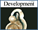 |
Chipping Away at Hedgehog-Mediated Neural Patterning
- May 18, 2007
The Hedgehog signaling pathway represents one of approximately six major ... Tags: 2007, Andrew McMahon , Development, publication |
|
MCB Places 1st and 2nd in CSHL Genome Research Poster Competition
- May 18, 2007
Itay Yanai, a post-doc in the Craig Hunter lab, created ... Tags: 2007, Andrew McMahon , CSHL Genome Research Poster Competition, Craig Hunter, awards |
|
|
Randy Schekman Presents 2007 Bloch Lecture
- May 15, 2007
The annual Bloch lecture returns on Thursday, May 31st, with ... Tags: 2007, Bloch Lecture, lecture |
|
|
David Kingsley to give Prather Lectures May 23, 24, 25
- May 9, 2007
The annual John M. Prather Lectures in Biology will showcase ... Tags: 2007, Prather Lectures, lecture |
|
|
A Kinase Pathway Required for Neuronal Polarity
- May 4, 2007
Proper polarization of neurons during development is essential for circuit ... Tags: 2007, Cell, Joshua Sanes, publication |
|
|
Rhinos Bessie and Victoria Celebrate 70 Years
- May 4, 2007
Vicky and Bess, the two rhinoceros sculptures outside the Bio ... Tags: 2007, Woody Hastings, rhinos |
|
|
Merck Presents 2007 Awards for Genome-Related Research
- April 30, 2007
The recipients of the 2007 Merck Genome-Related Research Awards were ... Tags: 2007, Andrew McMahon , Catherine Dulac, Craig Hunter, Joshua Sanes, Merck Genome-Related Research Awards, awards |
|
| 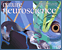 |
Neurodegeneration in a Petri-Dish: An Embryonic Stem Cell Model for ALS
- April 24, 2007
This publication (authored by DiGiorgio, Carrasco, Siao, Maniatis and Eggan ... Tags: 2007, Kevin Eggan, Nature, publication |
|
Regulation of Cyclin-CDK Activity by Inositol Pyrophosphates
- April 20, 2007
Lee et al. recently defined a new role for the ... Tags: 2007, Science, publication |
|
 |
2007 GGTP Symposium: Sex and Conflict
- April 16, 2007
Every year, second year students from the Genetics and Genomics ... Tags: 2007, Genetics and Genomics Training Program, symposium |
|
Target-Derived Signals Organize Motor Nerve Terminals
- April 5, 2007
Using the neuromuscular junction, an accessible, peripheral synapse between a ... Tags: 2007, Cell, Joshua Sanes, publication |
|
|
Retinal Ganglion Cells Rapidly Change Polarity
- April 2, 2007
Different neurons are tuned to different features, for example some ... Tags: 2007, Markus Meister, PLoS Biology, publication |
|
| 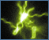 |
April 21 Symposium: How Quantitative Biology is Measuring Up
- March 14, 2007
On Saturday, April 21, a day-long symposium will be held ... Tags: 2007, symposium |
| 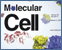 |
Putting a Face on a Class of Viral Deubiquitinating Enzymes
- March 12, 2007
Members of the Gaudet and Ploegh labs teamed up and ... Tags: 2007, Molecular Cell, Rachelle Gaudet, publication |
| 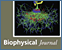 |
Yanking the Chain: Pulling on Bacterial Flagella to Trigger Polymorphic Transformations
- March 6, 2007
In many of the bacteria that swim by rotating helical ... Tags: 2007, Biophysical Journal, Howard Berg, publication |
|
Ikβ Kinase IKKε Plays Critical Role in Antiviral Innate Immunity
- March 5, 2007
Previous work from our lab identified two functionally redundant kinases ... Tags: 2007, Science, Tom Maniatis, publication |
|
|
Takao Hensch: Linking Neuroscience and Society
- Feb. 23, 2007
Takao Hensch thinks of himself as a bridge-builder, and since ... Tags: 2007, Takao Hensch, profile |
|
|
Microbial Sciences Symposium To Be Held Saturday, March 10
- Feb. 23, 2007
On Saturday, March 10, Harvard will host the Microbial Sciences ... Tags: 2007, Microbial Sciences Initiative at Harvard, Microbial Sciences Symposium, symposium |
|
|
Richard Losick Receives National Academy's Waksman Award
- Feb. 12, 2007
The National Academy of Sciences has announced that Prof. Richard ... Tags: 2007, Richard Losick, Selman A. Waksman Award in Microbiology, awards |
|
|
Catherine Dulac Receives the 2006 Richard Lounsbery Award
- Jan. 23, 2007
Catherine Dulac of MCB and the Howard Hughes Medical Institute ... Tags: 2007, Catherine Dulac, Lounsbery Award, awards |
|
|
New Light on Bioluminescence Evolution
- Jan. 22, 2007
The evolution of genes for light emission might have involved ... Tags: 2007, Proceedings of the National Academy of Sciences, Woody Hastings, publication |
|
|
David Jeruzalmi: Making Strides in Structural Biology
- Jan. 9, 2007
For MCB Associate Professor David Jeruzalmi, the lure of research ... Tags: 2007, David Jeruzalmi, profile |